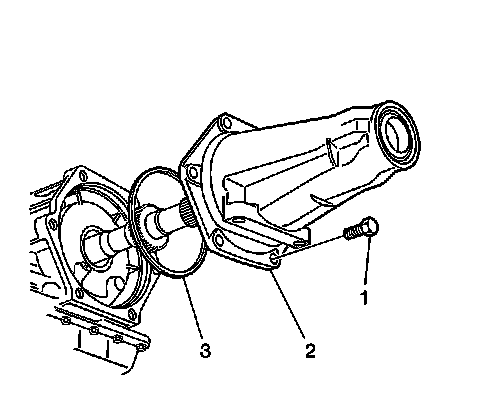

Transmission Extension Housing Assembly Replacement
Transmission Extension Housing Assembly Replacement
Removal Procedure

1. Raise and suitably support the vehicle. Refer to Lifting and Jacking the Vehicle.
2. Support the transmission with a transmission jack.
3. Place a drain pan under the vehicle.
4. Remove the propeller shaft.
5. Remove the transmission mount.
6. Remove the case extension bolts (1).
7. Remove the case extension (2).
8. Remove and discard the case extension O ring seal (3).
Installation Procedure
1. Install a new case extension O ring seal (3).
2. Install the case extension (2).
Notice: Refer to Fastener Notice.
3. Install the case extension bolts (1).
Tighten the bolts (1) to 45 N.m (33 lb ft).
4. Install the transmission mount.
5. Install the propeller shaft.
6. Remove the drain pan and the transmission jack.
7. Lower the vehicle.
8. Fill the transmission to the proper level with DEXRON(R) VI transmission fluid. Refer to Transmission Fluid Checking.